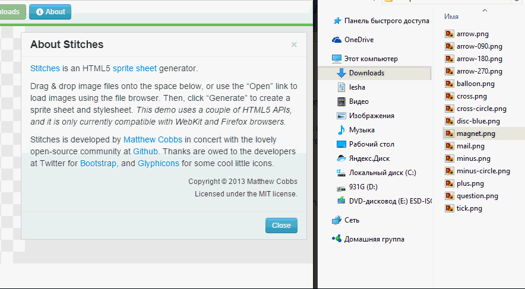
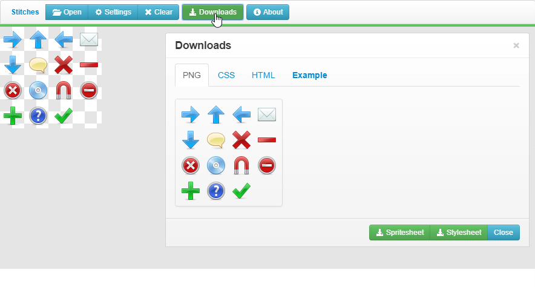
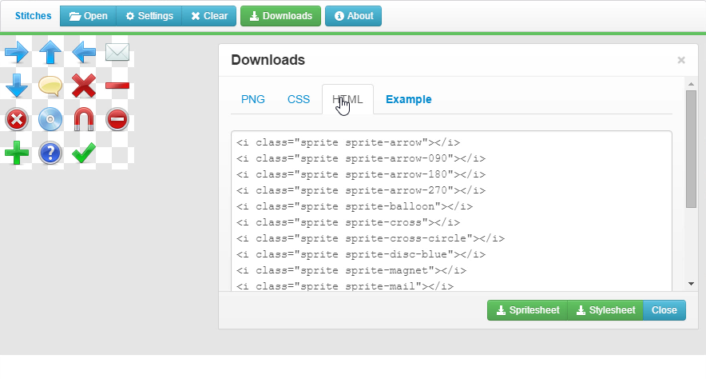

Кто не знает, CSS спрайты – это несколько картинок, объединённых в одну большую картинку. Это делается для ускорения загрузки сайта за счёт уменьшения числа запросов. Работают спрайты очень просто: на странице создаётся объект с фиксированной шириной и высотой и при помощи CSS свойства background-position задаётся какой кусок картинки проступает через это «окно».
К недостаткам спрайтов обычно относят кропотливость создания такой картинки и необходимость вычисления свойства background-position для каждого элемента. Раньше я создавал спрайты вручную при помощи Photoshop и вручную прописывал background-position, но при большом количестве элементов это получается долго. Поэтому я перешёл на онлайн инструменты. Предлагаю один такой прямо на этом сайте
Как с ним работать?
1. Перетащите файлы в окно:

2. Нажмите кнопку downloads и сохраните css и картинку со спрайтами (кнопки spritesheet и stylesheet соответственно)

3. На вкладке HTML будет показан пример использования спрайтов

{kind=link}
{kind=link}
{kind=link}
{kind=link}